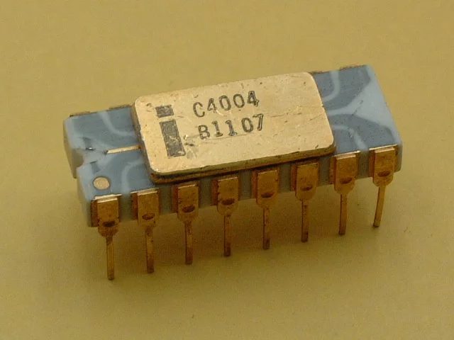

История процессора
Intel 4004 — 4-битный микропроцессор,
разработанный корпорацией Intel и
выпущенный 15 ноября 1971 года. Эта
микросхема считается первым в мире
коммерчески доступным однокристальным
микропроцессором.

Эволюция процессора